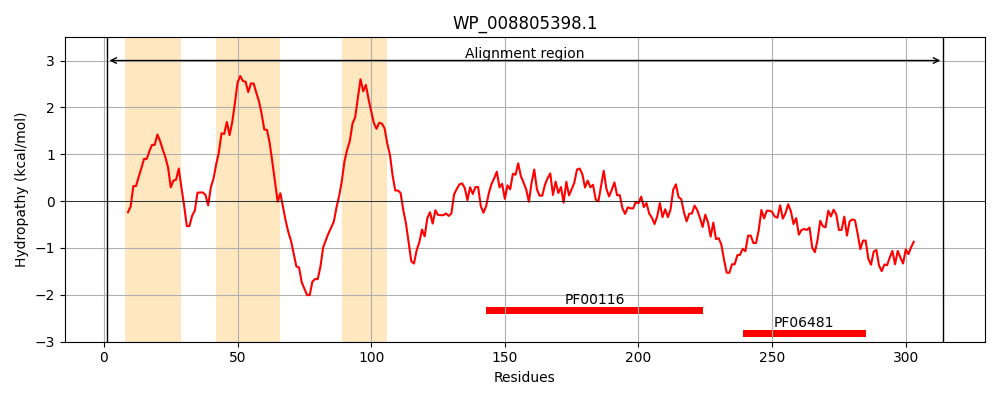
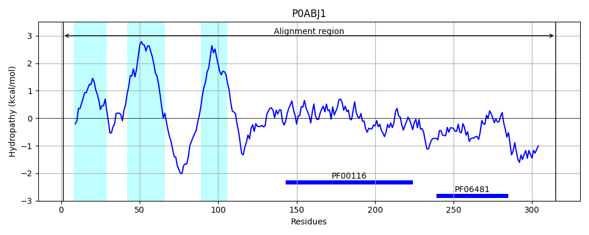
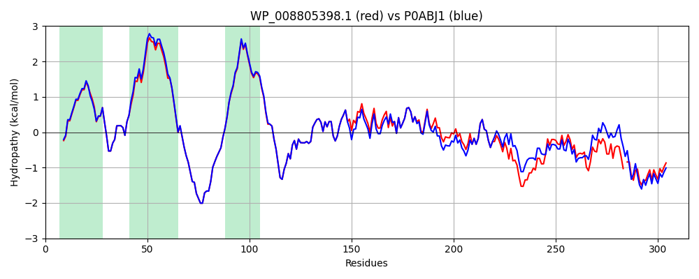

Hit Accession: P0ABJ1
Hit TCID: 3.D.4.5.1
Hit Description: gnl|BL_ORD_ID|8707 gnl|TC-DB|P0ABJ1|3.D.4.5.1 Ubiquinol oxidase subunit 2 OS=Escherichia coli (strain K12) GN=cyoA PE=1 SV=1
Mach Len: 315
e:0.000000
Query TMS Count : 3
Hit TMS Count: 3
TMS-Overlap Score: 3.250000
Predicted Substrates:CHEBI:5584;hydron
BLAST Alignment:
Score: 1507 , Bit scores: 585 bits, E-value: 0.0e+00, Alignment length: 315, Percentage identity: 90
Query: 1 MRLRKYNKSLGWMSLIASTVLLSGCDSALLDPKGQIGLEQRSLILTAFGLMMIVVIPAVLMAVGFAWKYRASNKDAKYSPNWSHSNKVEAVVWTVPILIILFLAVLTWKTTHALEPSKPLAHDEKPITIEVVSMDWKWFFIYPEQGIATVNEIAFPANVPVHFKVTSNSVMNSFFIPRLGSQIYAMAGMQTQLHLIADEAGTYDGISASYSGPGFSGMKFKAIATPDRATFDQWVEKAKQSPNSMDSMAAFDKVAVPSEYNKVEYFSNVKPDLFKDVVNKFMSH-ESMNMSKPEGEHAAHDGMEGMDMSHAETAH 314
MRLRKYNKSLGW+SL A TVLLSGC+SALLDPKGQIGLEQRSLILTAFGLM+IVVIPA+LMAVGFAWKYRASNKDAKYSPNWSHSNKVEAVVWTVPILII+FLAVLTWKTTHALEPSKPLAHDEKPITIEVVSMDWKWFFIYPEQGIATVNEIAFPAN PV+FKVTSNSVMNSFFIPRLGSQIYAMAGMQT+LHLIA+E GTYDGISASYSGPGFSGMKFKAIATPDRA FDQWV KAKQSPN+M MAAF+K+A PSEYN+VEYFSNVKPDLF DV+NKFM+H +SM+M++PEGEH+AH+GMEGMDMSHAE+AH
Sbjct: 1 MRLRKYNKSLGWLSLFAGTVLLSGCNSALLDPKGQIGLEQRSLILTAFGLMLIVVIPAILMAVGFAWKYRASNKDAKYSPNWSHSNKVEAVVWTVPILIIIFLAVLTWKTTHALEPSKPLAHDEKPITIEVVSMDWKWFFIYPEQGIATVNEIAFPANTPVYFKVTSNSVMNSFFIPRLGSQIYAMAGMQTRLHLIANEPGTYDGISASYSGPGFSGMKFKAIATPDRAAFDQWVAKAKQSPNTMSDMAAFEKLAAPSEYNQVEYFSNVKPDLFADVINKFMAHGKSMDMTQPEGEHSAHEGMEGMDMSHAESAH 315 | Protein Hydropathy Plots: |
|---|
|  |  |
Pairwise Alignment-Hydropathy Plot:
|
|---|
|  |